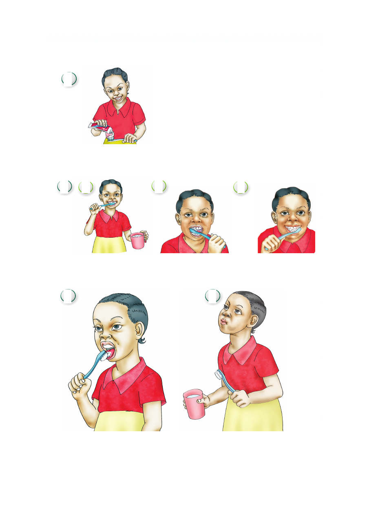

Hatua za kusafisha kinywa
1
Kuweka dawa ya meno kwenye mswaki
2 a b c
Kusugua meno
3 4
Kusafisha ulimi Kusukutua kwa maji safi
na salama
H a t u a z a kus a fisha kinywa 1 Kuweka dawa ya meno kwenye mswaki 2 a b c Kusugua meno 3 4 Kusafisha ulimi Kusukutua kwa maji safi na salama